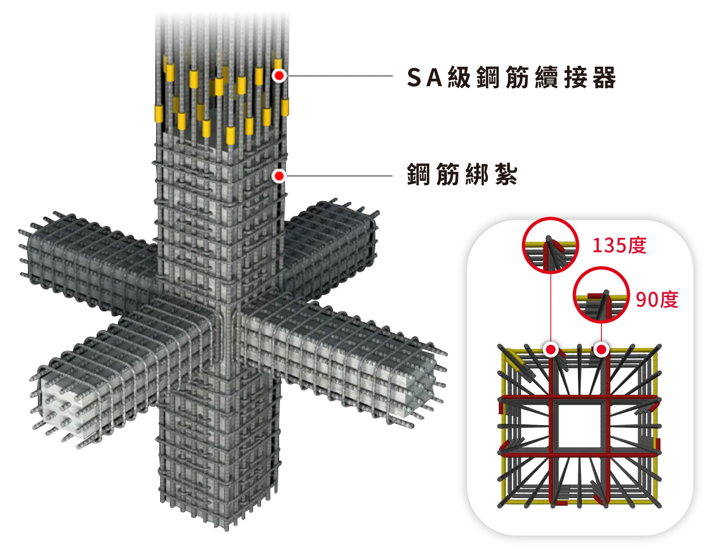

耐震建築
Earthquake
Resistant Building

SA級鋼筋續接器
嚴選最高等級SA級摩擦壓接鋼筋續接器
強化鋼筋續接處安全耐震安全度
與高鐵及台北101相同規格
鋼筋綁紮
不同斷面採跳接處理，避免地震橫向剪力破壞。
箍筋時，採135度標準彎勾，錯開配置，嚴密精準不易鬆脫。
繋筋採用135度及90度標準彎勾，上下左右交錯配置，安全加倍。
柱之上下端圍束區，箍筋間距依結構技師計算，並確實施作柱樑接頭之箍繫筋，嚴謹強化。
筏式基礎工法
筏式基礎工法將全部結構柱立於同一塊大基礎板上,因受力均勻且底板可隔絕地下水氣,所以更為耐震、防潮,雖成本較高,卻大幅提升建築安全性。
鋼筋綁紮工法
筏式基礎工法